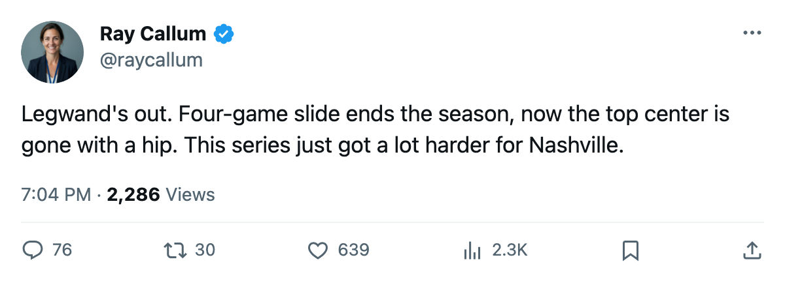

Injury Report: Nashville lose Legwand (hip); return targeted for April 12
The Predators' top center went down during their 4-game slide to close the season. The series with Anaheim starts tomorrow.
 Ray CallumSenior correspondent · Home Ice Network
Ray CallumSenior correspondent · Home Ice Network
The piece
 David Legwand89 landed on the injured list with a hip injury, the league placing onset between April 4 and April 7 with a return date of April 12. That makes him available for the first road game in
David Legwand89 landed on the injured list with a hip injury, the league placing onset between April 4 and April 7 with a return date of April 12. That makes him available for the first road game in  Mighty Ducks of Anaheim at the earliest, two games into the series.
Mighty Ducks of Anaheim at the earliest, two games into the series.
 Nashville Predators closed its season on a 4-game losing streak, the final two defeats coming away from home: a 4-3 loss at
Nashville Predators closed its season on a 4-game losing streak, the final two defeats coming away from home: a 4-3 loss at  Phoenix Coyotes on April 4, then a 3-2 overtime defeat at
Phoenix Coyotes on April 4, then a 3-2 overtime defeat at  Dallas Stars on April 6. The Predators finished at 101 points, 42 wins, 253 goals for, 226 against, first in the Central Division, 5 points ahead of Detroit.
Dallas Stars on April 6. The Predators finished at 101 points, 42 wins, 253 goals for, 226 against, first in the Central Division, 5 points ahead of Detroit.
This is Legwand's 3rd spell on the shelf this season. The first two are unnamed by the league. The hip designation makes this his first named injury of the year.
The series without their center
The Predators host Anaheim on April 8 and April 10, then travel for games on April 12 and April 14. Legwand's April 12 return date lines up with the third game of the set, if the timetable holds. If it slips, they play the entire series without their 85-overall center.
The season head-to-head went 4 meetings, with Nashville winning 2, Anaheim 1, and 1 going to overtime in Anaheim's favour. Nashville scored 12 to Anaheim's 10 across those four games.
Nashville Predators's remaining injured list is short: 3 men on the shelf across the entire roster.
Mighty Ducks of Anaheim finished 97 points, 32 wins, with 15 overtime losses, the most in the conference. They scored 229 and allowed 229. Their goaltending sits with  Jean-Sebastien Giguere93 at 72 starts and an 88% workload share, the highest in the Pacific.
Jean-Sebastien Giguere93 at 72 starts and an 88% workload share, the highest in the Pacific.
